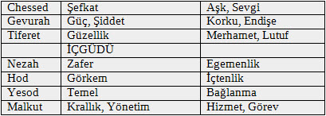

8. BÖLÜM TANRISAL YAYILMA- SEFİROT
Önceki bölümlerde de ele aldığımız gibi, Tzimtzum, Or Ain Sof’’un Seder Hishtalshlut’a
uygun biçimde gizlenmesi ile son bulur. Yine yukarıda gördüğümüz gibi, ancak bu “ara aşamalar dizisi” veya dünyalar’ın yaratıcılıkları sonucunda yaşadığımız dünya var olabildi. Yaratılış sürecindeki Dünyaların her birinin ruhsal altyapısında en önemli temel bileşen Sefirottur.
Hassidut’ta ise yayılma; Sefirot’un, Yaratılışta bu dünya insanlığına yardımcı olmak için Tanrı’nın rolü ve durumunu anlatmakla ilgili olduğu şeklinde açıklanır.
Sefirot, Tanrı’nın açılımının on biçimi veya niteliğidir. Sefirot Tanrı değildir ama O’nun özel niteliklerini sembolize eden araçlar olarak yorumlanabilir. Sefirah dünyası “açığa vurmak” veya “iletmek” anlamlarına gelen lesaper fiili ile ilişkilidir. Bu nedenle de Sefirah’ın fonksiyonu kuşkusuz açıklamak anlamına gelir. Aynı zamanda “safir” (Sapir) ile de ilişkilidir. Safir, parlak ve ışıklı bir taştır, bu bağlamda Sefirah’ın fonksiyonunun ışık vermek olduğu da çıkarılabilir. Bu iki kavramın birlikteliğinden Sefirot’un iki temel fonksiyonu olduğunu anlayabiliriz. Birincisi ışığı ortaya çıkarıp iletmeye hizmet etmek ve diğeri de açılmanın özel niteliği olan ışığı tanımlayan ve sınırlayan taşıyıcı olmak. Sefirot’u belki de (Kabala terminolojisi ile) kralın iki eline de benzetebiliriz, kral bazen sağ bazen da sol elini kullanır ama sonuçta kralın işini yapan elleridir.
Gerçekte her Sefirah, Işık ve Taşıyıcı olarak iki fonksiyona bölünebilir. Sefirotun ışığı temel ve biçimseldir. Bu ışıklar, Sefirot ile ortaya çıkan, Tanrının sonsuz gücünü yansıtırlar. Taşıyıcılar’ın ise karakteristik özellikleri vardır ve bu sebeple Tanrının gücünün sınırlanması sorununu ortaya koyarlar. Tanımı gereği sınırsız ve sonsuz olan “Ain Sof”, sınırlı dünyaları, Sefirot vasıtası ile yaratır ve yönetir.
Tevratta insan’ın Tanrı görünüşünde yaratıldığı yazmaktadır, bu bağlamda Sefirot’un dinamiklerini anlama amacı ile insan yapısına göz atmak yerinde olur.
Tevratta bir çok yerde Tanrı’nın, “Tanrının gözü”, “Tanrının eli” gibi insana ait özellikleri varmış gibi konuştuğu yazılıdır. Oysa Tanrının ne bedene ve ne de beden formuna sahip olmadığını biliriz. O halde Tevrat neden Tanrıyı insan özellikleri ile açıklamaktadır? Bu soruya bilgeler şöyle yanıt verirler; Tevrat insanlara, onların anlaması için insan dili ile hitap etmektedir.
Tanrı, dünya ile ilişkisinde, yarattıklarına anlatmak istediklerini onlardan ödünç aldığı terimler ile anlatır. Tanrının gözü yoktur ama gözü yaratır ve dünyada olan her şeyi onunla görür, eli yoktur ama eli yaratır ve dünyanın kaderine ilâhî takdiri ile yol gösterir. Tevrat bize, “Tanrı insanı kendi görüntüsünde yarattı” dediğinde, İnsan Sefirotun mikrokosmosudur (küçük evreni) ve tüm ruhsal altyapısı da insanda yansır anlamı çıkar.
Tanrının ne olduğu, ne yaptığı, yaratılışın her yerinde var olduğu hakkında konuşmak ancak Sefirot yardımı ile olanaklıdır. Ruhsal güzellik ve fiziksel yapısından olduğu kadar Kutsal özellikler de İnsan’dan yansır. Bu yüzden, Kabalistler, Sefirotu insan bedeninin çeşitli organları ve fonksiyonları ile açıklamayı seçmişleridir. Yalnız bu noktada, insan modelinin Sefirotun sadece bir yansıması olarak kullanıldığı unutulmamalıdır, bu benzetmeler sadece insan boyutunda geçerli olabilir, yüksek dünyalar için kullanılamaz.
Sefirot aynı zamanda İnsan’ın süpernal Sefirot’tan türeyen yeteneklerini ve ruhsal yapısını da yansıtır.Bu bağlamda bilinmelidir ki, İnsan, bu dünyada on ruhsal gücünü Kutsal hizmet için değerlendirdiğinde, onun kaynağı olan yüksek dünyalardaki Sefirotu etkileyebilir.
Buradan sonraki bölümlerde, on sefirot adlarının sıralamada zaman zaman farklı olduğunu göreceğiz. Genellikle 6. sefirah olarak Tiferet adı geçmekte ise de İ.Luria’nın sefirot düzeninde, Tiferet çıkartılıp “yukarı üçlü” bölgesinden doğan Da’at (Biliş) sefirahı yer almaktadır.
On Sefirot genellikle, İntelekt/Akıl (sechel) ve duygular (middot) olarak iki kategoriye bölünür. İntelekt kategorisi Hohmah, Binah ve Daat’ın (Baş harfleri ChaBaD sözcüğünü oluşturur) entelektüel gücünü içerir. Duygu gücü ise Chesed, Gevurah, Tiferet, Netzah, Hod, Yesod ve Malkhut’un yedi kanalını gösterir. Bu bölünme aynı zamanda Üç Anne ve Yedi Çift olarak da adlandırılır.
SEFİROTUN NİTELİKLERİ

Tablo 13: Sefirotun özellikleri
İlk olarak, ilk üçlü üç “anneler” olarak görülür çünkü bunlar diğer yedi’nin kaynağı ve köküdür, tam da annenin çocuklarının kaynağı olduğu gibi. Yedi Duygu’nun çift olması, onların ikiye katlanarak kendilerini ortaya çıkarmaları ile açıklanır.
Sefirot arasındaki hertürlü etkileşim ve tzinarot (“kanallar”) ‘ın ağ boyunca bağlanması, Yaratılış boyunca Tanrısal enerjinin akışını gösterir. Bu bağlantılar, sefirot’un çeşitli alt grupları arasında yayılan dinamiğin herbir sefirotta yansımasını içerir.
Sefirotun ilk bölümü hohmah, binah ve da’at (veya keter), farkındalığın dinamiği alt grubuna aittir; chesed, gevurah ve tiferet ise saf duygu dinamiği alt grubu; netzach, hod ve yesod, içgüdü ve pragmatik dinamiği alt grubu üyesidirler.
Malkhut, kendisinden önce gelen tüm enerjileri alan bağımsız bir eleman veya son alt grubun herhangi bir eki olarak görülebilir.
Sefirotu bölmenin bir başka yolu da partzufim (“profiller”) dir. Bir partzuf insan figürüne benzer, tek bir sefirah’ın (veya sefirot grubunun) kendi bağımsız on sefirotunu detaylı göstermek için kullanılır.
Kabala’ya göre, keter, hohmah, binah ve Malkhut sefirotunun herbirinin ayrı ayrı iki partzufimle ilişkisi vardır. Chesed’den Yesod’a altı sefirot olduğu için, bunlardan herbirinin hem ortak ve hem de bağımsız olmak üzere çift partzufimi vardır.
Tanrı, kendi sonsuz oluşumunun özlerinden bizim sınırlı fiziksel evrenimizi yarattı önkabulu ile Sefirot sıralaması, bu yaratıcı sürecin aşamalarını da temsil eder.
Ayrıca Sefirot yani bu birlikte varolan grup, “genetik” baskı olarak tanımlanabilen bir tek metafiziksel yapının, her bakımdan ve her düzeyde birbirini etkileyen parçalarından oluşur.
İnsan ruhunun psiko-spritüel durumu, herbir sefirah’ın saklı devindirici gücünün, sadece işlevsel ve yapısal bağlamda karşılaştırılmasıyla anlaşılabilir.
Kabalistik metinlerde Sefirot’un düzeni, herbiri yaratılışın ilahi etkisini simgeleyen üç paralel dik sütun olarak grafikleştirilir. Bu düzene, metinlerde ya sulam (“merdiven”), ya etz (“ağaç”) veya tzelem Elokim (“Tanrı’nın imajı”) olarak üç farklı gönderme yapılır. Son niteleme, Kutsal Kitapta “Tanrının insanı kendi görünüşünde şekillendirdiği”’ne dayanarak, sefirot düzenini, insan bedeni olarak ileri sürer. Bu yüzden herbir sefirah anatomik sefirotik yapının pozisyonuna uyan eklem veya organla da ilgilidir.
Birçok kabalistik kaynakda, Sefirot’un Ain-Sof ile ile mi yoksa bağımsız eleman mı olduğu sorusu belirsizdir. Azriel
ve sonra gelen Zohar’da Ain-Sof’un ateş, alev duygusu, kıvılcımlar ve aura ile birlikte olduğu öne sürülür. Azriel’e göre, Sefirot’un dialektik karakteri “karşıtların birliği ilkesi” bakımından Ain-Sof’un kendisi gibidir, herşey her ne ise enerjilerinin kaynağının birliğidir.
Zohar metinlerinde Sefirota gönderme yapan “güçler”, “gökler”, “dünyalar”, “sütunlar”, “ışıklar”, “renkler”, “tarihler”, “kapılar”, “akıntılar”, “elbiseler” veya “taçlar” gibi birçok terim bulunmaktadır. Zoharda Sefirot, Tanrının bakış açısından yaratılışı açığa çıkaran, boyutlar, ilkörnekler ve ruhsal güçlere kadar çok farklı şekillerde canlandırılır. Ayrıca Sefirot sembolizması, Tanrı, evren, insan ruhu, bütün ve tek’in bilgisinin, birleşik bir öz veya madde olduğunu açıklar.
Tzimtzum ile Ain-Sof’un “içe dönüş”ünün ilk sonuçları olarak, Tanrısal middot
düşüncesi Lurianistler arasında çok yaygındır. Bu görüşe göre; Tanrısal ışığın aşağı dünyalara yayılması sırasında, Tanrısal özelliklerde giderek büyüyen farklılıklar oluşur ve sonunda bu farklılaşma, kaplar (Kelim) olarak Sefirot’u meydana çıkarır. Luria bunlara ek olarak, Sefirotun geçirdiği dinamik değişimin, Tanrısallık ve dünyaların yaratılışı sırasında ortaya çıkan dramatik olayların sonucu gibi olduğunu ileri sürer. Bu olaylar, “Gürültünün Katarsisi” ve “Kapların kırılması” olarak adlandırılan olaylarıdır.
Sefirot sayısı on’dur ancak pek çok adlandırmaya konu olurlar. Kör İsak (Isaac the Blind)
Kitab-ı Mukaddesin Tarihler bölümünde geçen, Tanrıya 6 övgüyü Sefirotun 6 adı olarak verir. “Ya rab, büyüklük (gedullah) ve ceberrut-güç (gevurah) ve cemal-güzellik (tiferet) ve zafer (netzach) ve haşmet (hod) senindir... krallık...(Malkhut) senindir” [Tarihler 29:11]
Geç dönem kabalistleri tarafından herbir sefiraha yeni adlar da verilmiştir. Örneğin; Keter (Taç), ayni zamanda Ayin (Yokluk), Ratzon (irade-istenç), Atika Kaddisha (Kutsal antik Bir) ve Ehyeh (Ben olan) gibi.
Ancak Sefirot plânı, geç kabalistler tarafından, Moses Cordevero’nun düzenine uygun olarak benimsenmiştir.
On sefirot arasındaki ilişkinin (ve Da’at’ın quasi-Sephirah”ı), Tanrısal ilkelerin buyrukları olduğu söylenir; Lütuf, Adalet ve Tanrısal istek (veya zerafet) gibi. Bu yüzden de Sefirot üç “kolon” veya “sütun” halinde anlatılmaktadır. Bu düzenleme “Yaşam Ağacı” veya “Tanrının görüntüsü” olarak da bilinir. [Yaşam Ağacı diyagramında “doğu” üstte, “güney” sağda, “batı” dipte ve “kuzey” soldadır.]
Sefirah (çoğul. ”Sefirot”) kutsal enerji veya yaşamgücünün bir kanalıdır. Kabalistik literatürde, zaman zaman hepsi birlikte onbir sefirottan söz edilir. Keter ve Da’at, bir tek güc’ün farklı boyutunu temsil ettiklerinden, gelenekte genellikle on sefirot kabul edilir. Sefirot düzeni, aşağıdaki gibi tanımlanır.
Sefirot sembolü, aynı zamanda Kabalistik teosofiyi (Tanrıbilim) tanımlayan bir kavramdır. Sefirot genellikle yaratılışın yapı taşları, varoluşun ilk örnekleri (arketipleri), Tanrının kişisel özellikleri ve dünyanın başlıca değerleri olan 10 sayıyı çağrıştırır. Daha önce gördüğümüz gibi, İlk-Kabalistik kaynaklarda Sefirota ilişkin en erken referanslardan Sefer Yetzirah (Oluşumun kitabı)’da Tanrının “Dünyaya yaratılışta kazıdığı” “bilgeliğin otuziki yolu”nun, Sefirotla birlikte ibrani alfabesinin 22 harfinden oluştuğu söylenmektedir. Sefirot sembolizmi, sonradan Sefer ha-Bahir, Zohar ve sonraki bütün Kabalistik metinlerde de hâkim konu olmuştur.